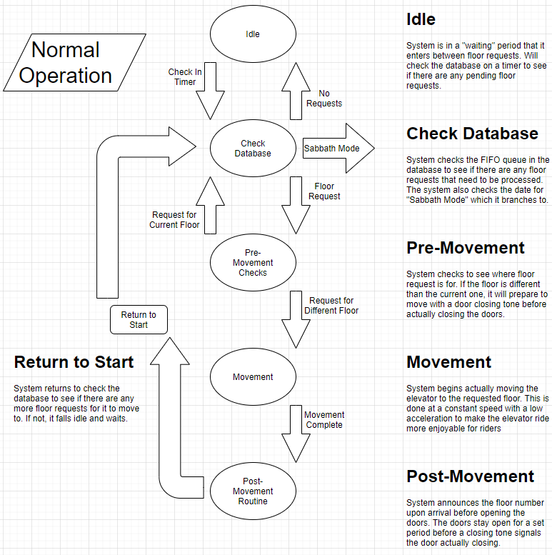
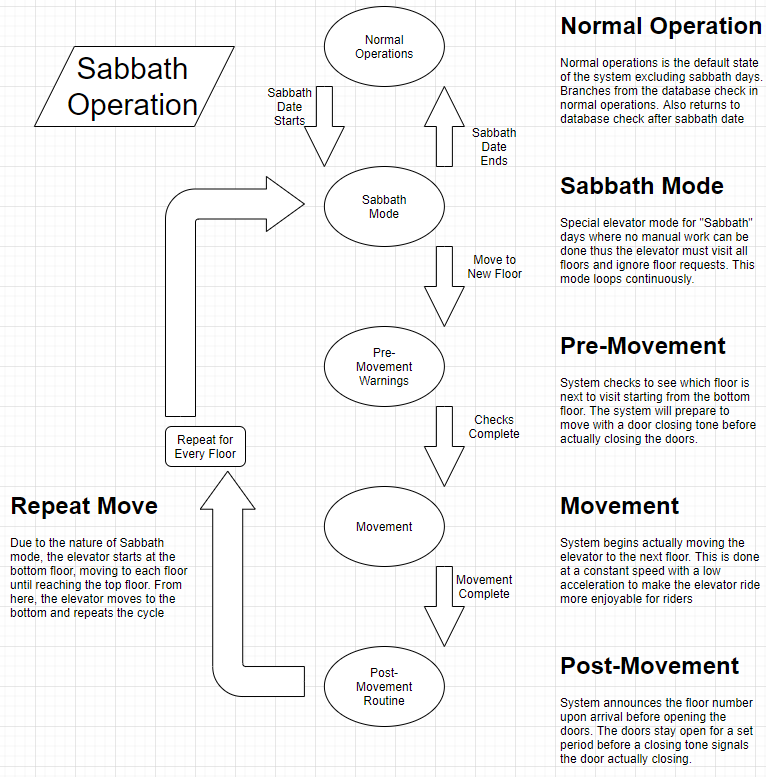

Joshua Halvorsen's Logbook
Week 4
Futher outlined the flow and state diagrams for the elevator operations
Integrated this new flow/state diagram with the announcement system
Created flow charts for the normal operations and sabbath mode state diagrams (see below)
Generated the text to speech files for the announcements
Obtained elevator music to play while the elevator is moving
Uploaded all files to Git to push to the Pi
Updated logbook with week's activities
Normal Operations State Diagram
Sabbath Mode State Diagram
Week 3
Updated logbook to follow new formatting
Had some issues with my browser caching the website while working on it even when cache was cleared
Did figure out how to disable the cache on Chrome to prevent these issues in the future
This week's main task is to develop the announcement system for the floors
Began working on the sudo code/general layout of this section
Finally got my Discovery board to use instead of the (dead) nucleo
None of the needed software for the Discovery board is installed on my laptop
Decided to shift the scheduling for my current section and my next section
Will shift the planning for the Sabbath mode to earlier to combine with the planning for the floor announcements
This will give time to figure out the Discovery board and do all the microcontroller work at once
Week 2
Registered for GitLab account and was added to the project
Initially tried to use GitHub Desktop to work but did not play nice with GitLab Account
Got SourceTree to work as a GitLab desktop client and spent time learning the program
Spent more time reviewing class material and began practicing it through the class assignments
Attempted to assist Justin with the CAN protocol and filtering but Adam was able to help more
Began looking into my next part of the project of announcing the current/next floor numbers
Got logbook format set up and completed logbook enteries for the past 2 weeks
Week 1
Attempted to locate my Nucleo board to remember that it died during the previous semester
Attempted to locate my Discovery board to discover I gave it to Troy for a project he was working on months ago
Spent time reviewing Software Engineering and Data Com class material in preperation for the project
Familiarized myself with the new group of people I would be working alongside
Helped finalize the Gantt chart for the project

About
Joshua Halvorsen is an ESE student. His activities related to Project 6 are listed in this blog